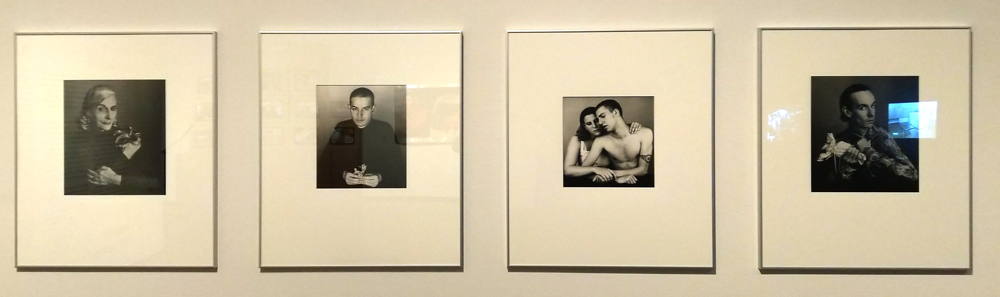
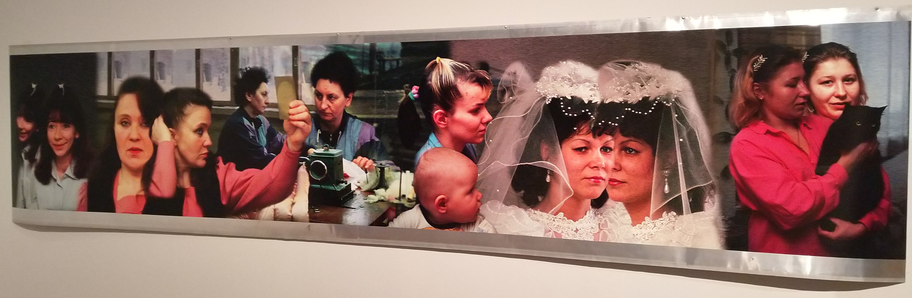
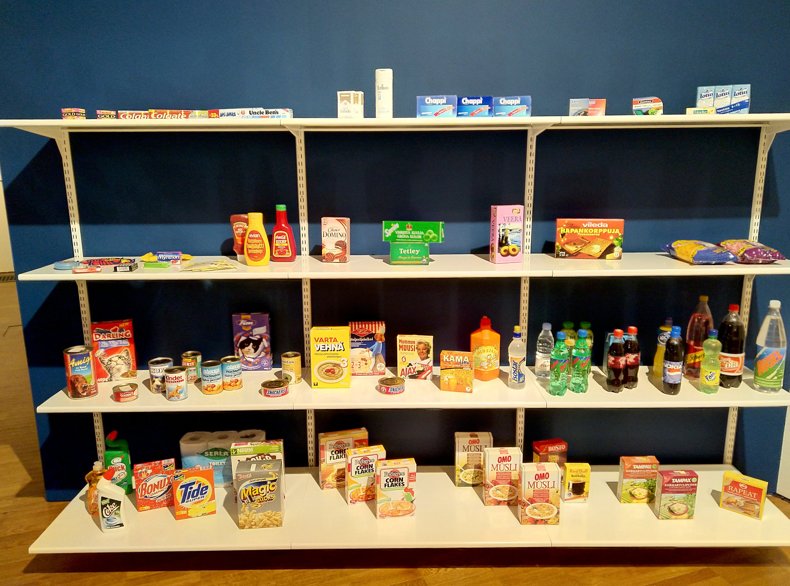
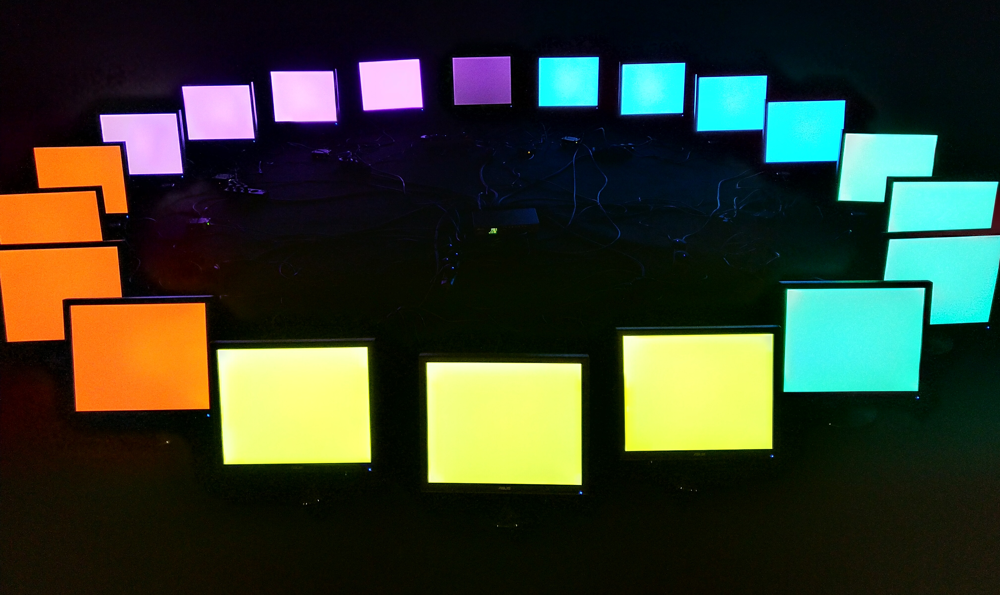
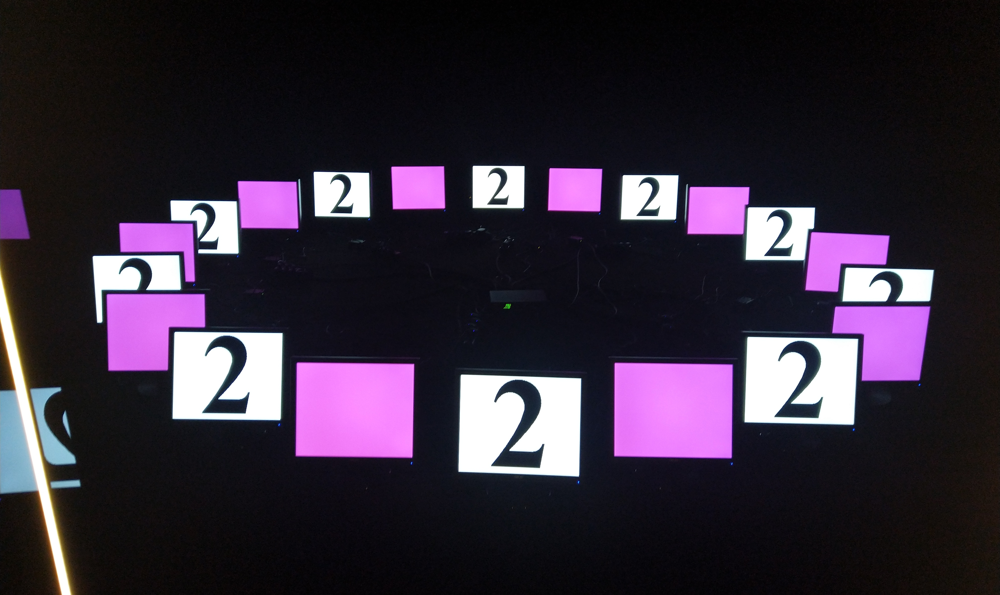
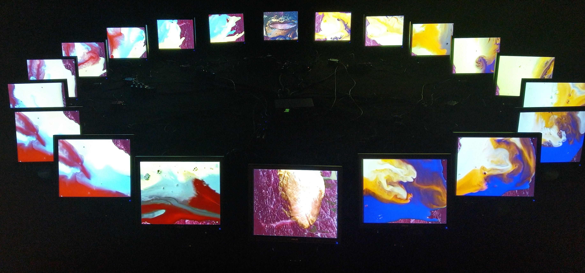

Koht: KUMU 4. korrus
Näitusel oli näha palju fotokunsti, mis väljendas fotokunsti tähtsust kui kunstiliigina 1990-ndatel:

Toomas Volkmann (vasakult paremale): Elsa tiigerliiliaga (1994), David adruga (1994), Õde-vend Emily ja
Christian (1994), Johnny murtud ingliga (1994)

Liina Siib: Süütuse presumptsioon I (1997)
Näitusel olevad teosed andsid mõista, et näituse mõte on seotud 90-ndate kiire tehnoloogiaarenguga ning Eesti
taasiseseisvumisega. Paljud teosed pilastasid vananenud tehnoloogia vananemist näidates vananenud tehnoloogia kitsaskohti,
kuid samas ka teisest küljest inimeste saamatust uue tehnoloogiaga kohaneda. Üks hea näide kiiresti arenevast maailmast
on Mart Viljuse installatsioon (TM) Trademarks:

Mart Viljus: (TM) Trademarks (1997)
Tema teoses on paljudel tuntud kaubamärkidega tarbekaupadel ära vahetatud kaubamärgid. Viljuse teose mõte on näidata, kuidas
firmade ainus eesmärk on teenida raha, müües mida tahes. See tähendab, et firmasid ei huvita see, mida müüakse, vaid see,
kas selle asjaga on võimalik palju raha teenida. Seepärast ei tundugi nii imelik, kui poeriiulitele tekiks Nokia Cola,
tuntud pesupulbribrändi OMO nimeline müsli või Arieli siirup. Samuti ei paneks imestama, kui ühel päeval oleks võimalik
osta Fazeri kassikrõbinaid või Marlboro šampooni.
Kõige enam köitis mind aga Raoul Kurvitza installatsioon Pentatonic Color System Programmid 01, 02 ja 03:



Raoul Kurvitz: Pentatonic Color System Programmid 01 (1994), 02 (1999) ja 03 (2020) (Heli:
Ariel Lagle, Programmeerimine: Andres Lepp)
Raoul Kurvitz lõpetas 1984. aastal Eesti NSV Riikliku Kunstiinstituudi
arhitektina. 1986. aastal moodustas ta oma kursusevenna Urmas Muruga
üleminekuaja ühe radikaalsema kunstiürituse Rühm T. Loomeinimesi koondav
rühmitus tegutses laial kunstiväljal - performance, maal, installatsioon,
foto, video, muusika - ning nende seisukohalt oli kunsti piiride puudumine
loomise üks eeldusi.
1980. aastatel neoekspressiivsest maalist huvitunud Kurvitz hakkas 1990.
aastate keskpaigas looma suureformaadilisi spetsiifilistest materjalidest
installatsioone. See 20 monitorile loodud meediainstallatsioon on teiste
arvates tema loomingus erandlik ja silmapaistev teos, milles autor realiseerib
tehnoloogiliste vahendite kaudu oma kogemusi maalijana. Teos esitab
kolmeosalise värvuse- ja sümbolitsükli, mis omavahel summeeruvad optiliseks
valguseks. Tegu on ühe esimese mastaapse meediainstallatsiooniga eesti kunstis
- algset versiooni eksponeeriti 1994. aastal Sorose Kaasaegse Kunsti Keskuse
aastanäitusel "Olematu kunst" ning selle uuendatud varianti 1999. aastal
Kurvitza isikunäitusel "Sümfoonia Si-b minor; Postapokalüptika". Selles
installatsioonis on varasemalt loodud tööd tervikuks ühendatud.
Mina aga arvan, et tegu ei ole tervikuga, vaid tulemas on veel kaks programmi.
Sest miks muidu panna teose pealkirja "Pentatonic"? Pentatoonilisus on pigem
seotud muusikaga kui pildiga ning arvestades seda, et ta on juba mitu korda
oma teost uuendanud, siis minu arvates on teose sügavam mõte see, et
programmeerimises saab alati teha parema ja uuema versiooni programmist.
Teos tekitas minus peamiselt nostalgiat 2000-ndate alguse vastu, kuid
sain näha, mis oli võimalik juba 90-ndatel. Teoses on kasutatud
peamiselt eredaid toone, kuid pime ruum andis märku,
et 90-ndatel oli aruvutisõltuvus nii tugev probleem, et sageli kasutati
arvuteid hiliste öötundideni.
Ühtlasi näitab teos ka seda, et tänapäeva kunstis on väga oluliseks saanud
programmeerimine ning olles ise programmeerija, võin veendunult öelda, et
tegelik kunst peitub programmeerimises. Seega programmeerimine on kunst
ja kunst ongi programmeerimine. Kui inimesed loovad kunsti, siis nad ei tee
muud, kui programmeerivad. Maalikunstis programmeerivad inimesed oma meeli
ja liikuvaid kehaosi, et valida sobivaid värve, mida kanda lõuendile sobivalt
ning sobivasse kohta. Arvutite programmeerimisel programmeerib programmeerija
aga arvutit tegema seda, mida tahes, et lihtsustada või automatiseerida inimese tööd.
Programmeerimine on väga loominguline tegevus, sest programmeerimises saab läheneda
probleemidele mitut moodi, kasutades erinevat käsustikku, süntaksi ning isegi teksti
paigutust.
Jõudes järeldusele, et programmeerimine on kunst, siis järelikult ei ole õigust
sedavõrd tunnustada antud teose autorit selle teose loomise eest, vaid tunnustada
tuleks tegeliku kunstilise töö tegijat, programmeerija Andres Leppa. Seega järeldan
mina, et selle installatsiooni tegelik autor ei ole mitte Raoul Kurvitz, vaid
hoopis Andres Lepp.
Minu arvates tahab kunstnik selle teosega näidata, et tänapäeval ei ole vaja millegi
mastaapse saavutamiseks omada oskusi antud alal, vaid tuleb hoopis tunda inimesi, kes
oskavad sinu plaane raha eest teostada. Samuti viitab see infoühiskonnas tegevuste
jaotamisele, mis kiirendab tööd ning tõstab tulemuse kvaliteeti oluliselt.
____________________
Eesti Teadusinfosüsteem (2020) Mart Viljus. Loetud:
https://www.etis.ee/CV/Mart_Viljus/est
, 14.03.2020